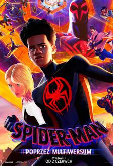

Nowości filmowe

STRAŻNICY GALAKTYKI: VOLUME 3
Wciąż wstrząśnięty utratą Gamory, Peter Quill zbiera swój zespół by obronić wszechświata – misja, która może oznaczać koniec Strażników, jeśli się nie powiedzie.

SPIDER-MAN: POPRZEZ MULTIWERSUM
Z Brooklynu Miles trafia do multiwersum. Razem z Gwen Stacy, spotykają innych Spider-Manów, którzy mają za zadanie ochronę świata przed zagrożeniami. Kiedy bohaterowie spierają się o to, jak poradzić sobie z nowymi niebezpieczeństwami, Miles musi na nowo zdefiniować, co to znaczy być bohaterem i jak ocalić ludzi, których kocha.
SZYBCY I WŚCIEKLI 10
W ciągu wielu misji i wbrew przeciwnościom losu Dom Toretto i jego rodzina przechytrzyli i prześcignęli każdego wroga na swojej drodze. Teraz muszą zmierzyć się z najgroźniejszym przeciwnikiem, z jakim kiedykolwiek mieli do czynienia.